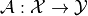

landweber¶
-
odl.solvers.iterative.iterative.landweber(op, x, rhs, niter, omega=None, projection=None, callback=None)[source]¶ Optimized implementation of Landweber’s method.
Solves the inverse problem:
A(x) = rhs
Parameters: - op :
Operator Operator in the inverse problem.
op.derivative(x).adjointmust be well-defined forxin the operator domain.- x :
op.domainelement Element to which the result is written. Its initial value is used as starting point of the iteration, and its values are updated in each iteration step.
- rhs :
op.rangeelement Right-hand side of the equation defining the inverse problem.
- niter : int
Number of iterations.
- omega : positive float, optional
Relaxation parameter in the iteration. Default:
1 / op.norm(estimate=True) ** 2- projection : callable, optional
Function that can be used to modify the iterates in each iteration, for example enforcing positivity. The function should take one argument and modify it in-place.
- callback : callable, optional
Object executing code per iteration, e.g. plotting each iterate.
Notes
This method calculates an approximate least-squares solution of the inverse problem of the first kind

for a given , i.e. an approximate solution to
for a (Frechet-) differentiable operator  between Hilbert spaces
 and
and  . The method
starts from an initial guess
. The method
starts from an initial guess  and uses the
iteration
and uses the
iterationwhere is the Frechet derivative of at
 and
and  is a
relaxation parameter. For linear problems, a choice
is a
relaxation parameter. For linear problems, a choice
 guarantees
convergence, where stands for the
operator norm of .
guarantees
convergence, where stands for the
operator norm of .Users may also optionally provide a projection to project each iterate onto some subset. For example enforcing positivity.
This implementation uses a minimum amount of memory copies by applying re-usable temporaries and in-place evaluation.
The method is also described in a Wikipedia article.
- op :